Censor Tracker
Расширение для обхода цензуры и выявления сайтов, которые следят за вами. Мы не зарабатываем на наших пользователях и не заглядываем в ваш трафик.
Расширение для обхода цензуры и выявления сайтов, которые следят за вами. Мы не зарабатываем на наших пользователях и не заглядываем в ваш трафик.
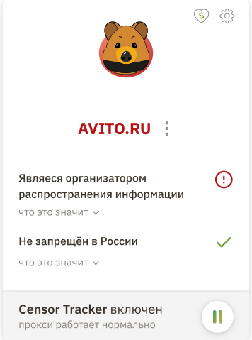
Такие сайты обязаны хранить и без решения суда предоставлять органам любую информацию о пользователях, в том числе сообщения и весь расшифрованный трафик с их сайта.
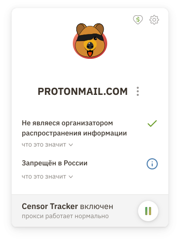
Команда Censor Tracker следит за реестром запрещенных в России сайтов. Сейчас в нём больше 700 000 адресов. Также команда Censor Tracker следит за цензурой в мире и помогает обходить блокировки в таких странах как - Украина, Азербайджан, Беларусь, Казахстан, Турция и другие.
Сайты из реестра Роскомнадзора открываются автоматически. Сайты, которые замедляются или блокируются с помощью ТСПУ, можно добавить в свой список.
Мы не храним логи в отличие от большинства коммерческих расширений.
Вы можете убедиться в этом лично, изучив исходный код Censor Tracker на GitHub.
Большинство проблем решается одним из шагов ниже. После каждого шага стоит проверить, открывается ли нужный сайт, и переходить к следующему, только если не открывается.
Если не открываются YouTube, Telegram или другие ресурсы, которые замедляются с помощью ТСПУ, их нужно добавить в расширение вручную — как это сделать, описано в ответе о сайтах, заблокированных с использованием ТСПУ.
Настройки расширения открываются так: иконка Censor Tracker на панели браузера —> шестеренка в правом верхнем углу появившегося окна.
about:addons —> раздел Расширения —> Censor Tracker —> вкладка Подробности —> в пункте Запуск в приватных окнах выбрать Разрешить.chrome://extensions в Chrome, about:addons в Firefox. Кнопка выключения внутри самого расширения не подходит: расширение, выключенное таким способом, продолжает удерживать управление прокси. После отключения стоит перезапустить браузер. VPN-клиент на устройстве на время проверки тоже лучше отключить: с ним расширение может неверно определить страну.Если ничего из этого не помогло, стоит написать нам — поможем разобраться в проблеме.
Да, но такие сайты нужно добавить вручную.
Censor Tracker автоматически открывает через прокси сайты из реестра Роскомнадзора. Ресурсы, которые замедляются или блокируются с помощью ТСПУ в обход реестра, — например, YouTube и Telegram, — в реестр не входят.
Крупные сайты загружают содержимое с нескольких адресов. Например, страница YouTube приходит с youtube.com, а превью и видео — с ytimg.com и googlevideo.com. Поэтому сайт добавляется в два шага: сначала основной адрес, чтобы страница открылась, затем связанные с ней адреса, чтобы загрузились картинки и видео.
https:// и www — например, youtube.com. Поддомены учитываются автоматически: youtube.com покрывает и www.youtube.com, и m.youtube.com.Расширение ищет адреса среди того, что страница уже успела загрузить, поэтому второй шаг работает только после того, как сайт открылся. Как правило, нужны адреса, в названии которых узнается сам сайт или его владелец.
[username[:password]@]hostname:port (все что находится в [ ] скобках является не обязательным для ввода, например, если вы используете локальный SOCKS-прокси, то корректный ввод выглядит так - 127.0.0.1:3345).
Для того, чтобы воспользоваться SOCKS over Tor нужно:
127.0.0.1:9150 и нажмите кнопку СохранитьДля того, чтобы воспользоваться SOCKS over Psiphon нужно:
127.0.0.1:<порт, который отображается в логах Psiphon согласно выбранному протоколу> и нажмите кнопку СохранитьДа. Встроенные прокси-серверы Censor Tracker открывают сайты в сетях Tor и I2P без дополнительных программ — достаточно ввести адрес в адресной строке. Если в расширении выбран собственный прокси, такие сайты откроются, только если он сам поддерживает Tor и I2P.
Адреса Tor старого формата, с 16 символами перед .onion, не работают с 2021 года: сеть Tor отключила их поддержку. Действующие адреса состоят из 56 символов.
Да, двумя способами — в зависимости от размера списка.
Небольшой список — до 1000 доменовНастройки —> Мой список проксируемых сайтов —> Загрузить список из файла или URL. Можно выбрать текстовый файл на устройстве или указать ссылку на файл в интернете — например, на GitHub Gist. Загруженные домены добавятся в список, после чего нужно нажать Сохранить изменения.
Требования к списку:Повторяющиеся домены удаляются автоматически.
Большой список — до 1 000 000 доменовНастройки —> Регион —> блок Внешний реестр (необязательно):
Подходит текстовый список с одним доменом в строке, JSON-массив или JSON-объект с массивом domains. Ограничения — 32 МБ и 30 секунд на загрузку. Внешний реестр дополняет встроенный, а не заменяет его. Если загрузка не удалась, расширение сохраняет последний корректный список.
Список загружается с устройства пользователя, поэтому владелец источника может видеть его IP-адрес — лучше использовать проверенные источники.


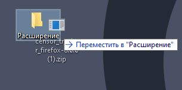
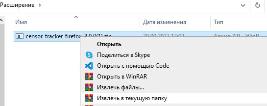
"Новую вкладку" и перейдите по этому адресу: about:debugging#/runtime/this-firefox.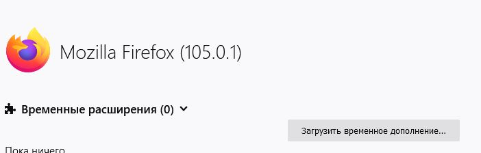
manifest.json.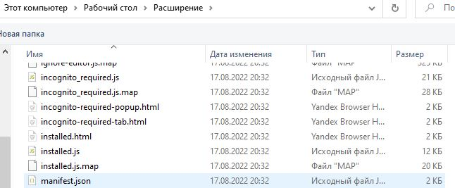

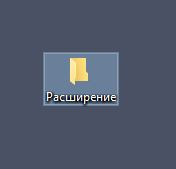
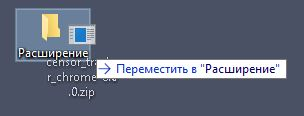
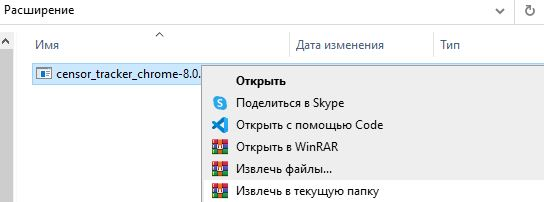
"Новую вкладку" и перейдите по этому адресу: chrome://extensions."Режим разработчика".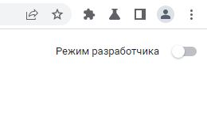
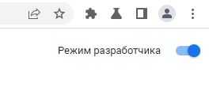
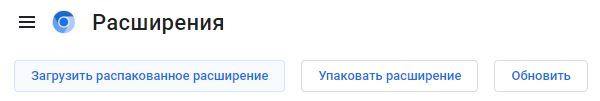
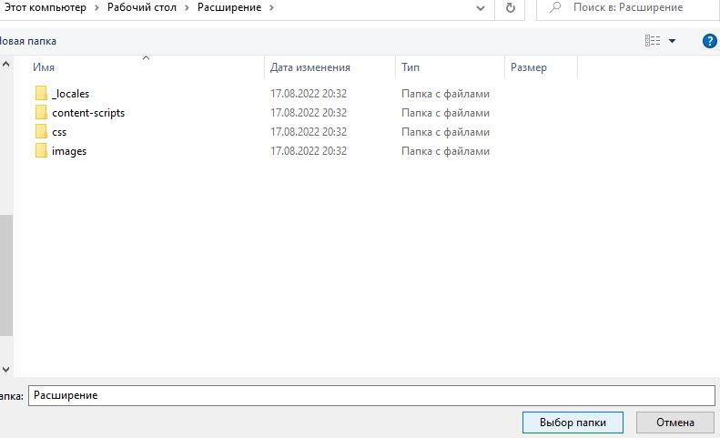